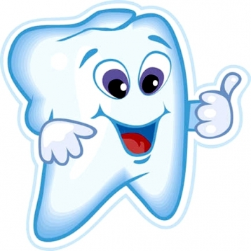

Child Development Clinic
“A perfect smile can set everything straight and this is only possible with healthy teeth & gums.”
The Department of Dental Sciences at Jaipur Golden Hospital renders facilities for all routine and specialised dental procedures while ensuring quality and excellent patient services in a caring & comfortable environment. Our experienced dental surgeons use most up-to-date technology and high-tech equipments to deliver latest dental care treatments. This helps patients attain healthy & improved quality of life. We go an extra mile to make patient’s experience better than the best while giving priority to hygiene and infection control.
The department specialises in Orthodontics, Oral Medicine & Radiology, Prothodontics, Implantology, Endodontics, Oral Surgery, Oral Pathology, Pedodontics, Periodontics & Prosthodontics. These divisions of dentistry deal into special areas of practice that is, based to a great extent on different biological, psychological, and physiological approaches to diagnoses or treatment.
Good dental health forms the foundation of a healthy body. Taking care of your teeth and mouth is vital for your overall health and neglecting them can lead to severe consequences. Therefore, it is recommended to immediately visit your dentist for your oral problems like tooth decay, cavities, gum disease, broken/knocked out tooth, lost filling, lost crown, broken braces wires, loose brackets and soft tissue injury. The dental emergencies like oral infection, visible swelling or trauma require immediate attention and must be treated on priority basis.
We specialize in:
- Orthodontic Appliances And Splints To Help Straighten And Protect Teeth
- Full Dentures for Patients; Removable Partial Dentures Or Fixed Bridges, Crowns
- Restorative Treatment And Root Canal Treatments
- Radiographic Examinations Of The Oral Cavity.
- Diagnosis Of Pathological or Irregular Conditions
- Performing Restoration of Simple And Compound Cavities With Standard And Prescribed Material
- Performing Single And Relatively Uncomplicated Multiple Extractions Of Teeth
- Practicing Prosthetic Dentistry By Studying Patient's Mouth To Determine Type Of Restoration Required
- Taking Mouth Impressions And Bite Registrations For Crowns, Jackets, Dentures And Bridges; Trying Temporary Setups In Patient's Mouth, And Fitting And Inserting The Finished Appliances
- Performing Uncomplicated Pulp Canal Therapy
- Treating Mouth and Gum Infections And Recognizing Symptoms Of An Assortment Of Systemic Diseases And Referring Cases For Medical Diagnosis.
- Patients are demanding and the dentists are becoming more willing to deliver. We give your smile a WORTH.

.jpg)